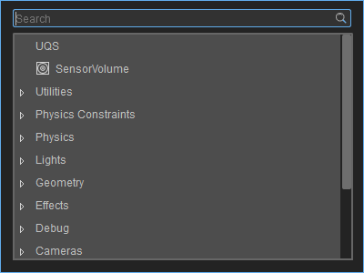
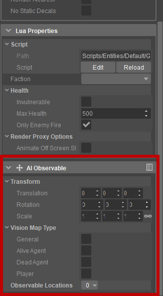

Overview
The Components panel contains all of the available Components that can be applied to an Entity. This article details the individual settings for each of the Components.

When these Entity Components have been applied to an Entity, a new subsection appears in the Properties of that Entity:

It can be removed from the entity by clicking the button in the top-right corner and choosing Remove.
Transformation
Many of the components have a Transform setting. This allows their position and orientation to be offset from the entity they are attached to, while still following it.
| Setting | Description |
|---|---|
| Translation | The positional offset in relation to the entity - for example a value of 0,0,1 will mean an offset of one unit upwards (Z axis). |
| Rotation | The rotation offset in relation to the entity. |
| Scale | The scale offset in relation to the entity. The linking symbol locks the scaling so that the values are relative to each other. For e.g. a value of 1,2,3, scaled by 2x would result in 2,4,6. (if unlocked then the scaling cannot be guaranteed). |
General
SensorVolume
See
| Setting | Description |
|---|---|
| Shape | Shape of the volume. |
| Size | Determines the size of the shape. |
| Attribute | Identifiers of this volume. |
| Listener | Determines to which attribute we want to listen. You will only receive signals for those specific attributes. |
AI
AI Observer
The observer component registers the entity to VisionMap and makes it able to see other entities that are registered as 'Observables'.
Vision Map Type
Combination of flags to identify the type of the observer.
Vision
Configuration of the vision sensor with which the entity can observe the world.
| Setting | Description |
|---|---|
| Field of View | Field of view in degrees. |
| Sight Range | The maximum sight distance from the 'eye' point to an observable location on an entity. |
Location
Location of the eye sensor (offset from pivot or bone position).
| Setting | Description |
|---|---|
| Location type | Whether the eye sensor is attached to a bone or the pivot. |
| Offset | Fixed offset from position. |
| Bone Name | (if Location Type is 'Bone') The name of the bone/joint from which to take the position. |
Vision Blocking
| Setting | Description |
|---|---|
| Blocked By Solids | If enabled, vision ray-casts cannot pass through colliders that are part of solid objects (sometimes also denoted as 'hard cover'). |
| Blocked By Soft Cover | If enabled, vision ray-casts cannot pass through colliders marked as 'soft cover'. These are colliders that only block vision but you can still sit 'inside' them (examples are: bushes, tall grass, etc). |
Types To Observe
Only entities that belong to these vision map types will be processed for sight.
Factions To Observe
Only entities that belong to these factions will be processed for sight.
Use Custom Filter
Whether the custom condition filter should be used (Schematyc 'ObserverCustomFilter' signal)
AI Observable
The observable component registers the entity to VisionMap and makes it able to be 'seen' by other entities that are registered as 'Observers'.
Vision Map Type
Combination of flags to identify the type of the observable.
Observable Locations
Positions (offset from the pivot or bones) that are checked for visibilty by Observers.
| Setting | Description |
|---|---|
| Location type | Pivot or Bone. |
| Offset | X, Y and Z coordinates for fixed offset from position. |
| Bone Name | (if Location type is 'Bone') The name of the bone/joint from which to take the position. |
AI Listener
The Listener component registers the entity to AuditionMap and makes it able to perceive sound stimuli. The component is notified when any interesting stimuli is heard.
Factions To Listen To
Only sound stimuli whose source entities belong to these factions will be processed.
Listening Distance Scale
An optional scale that can be applied to increase or reduce the listening distance.
Ear Locations
A collection of locations that will determine if the entity is within hearing range of sound stimuli. Can also be used to cast rays to these locations to determine sound obstruction fall-offs and such.
| Setting | Description |
|---|---|
| Location type | Pivot or Bone. |
| Offset | X, Y and Z coordinates for fixed offset from position. |
| Bone Name | (if Location type is 'Bone') The name of the bone/joint from which to take the position. |
Use Custom Filter
Whether the custom condition filter should be used (Schematyc 'ListenerCustomFilter' signal)
AI Navigation Markup Shape
The Navigation Markup Shape component is used to create markup shapes, allowing to 'mark' triangles in the NavMesh with various annotations (area types and flags). Annotations can be set in the Scripts/AI/Navigation.xml config file.
| Setting | Description |
|---|---|
| Affected Agent Types | What agent types' NavMeshes should be affected. |
| Area Type | Area type that should be applied to NavMesh. All flags defined for the area type are applied as well. |
| Size | Size of the rectangular shape in X, Y and Z coordinates. |
| Static | Set to true if the markup shape's triangles' annotation doesn't need to be modified at runtime. |
| Expand by Agent Radius | True if the marked area on NavMesh should be expanded by the agent radius. |
AI Navigation Agent
The Navigation Agent component gives the ability to navigate in space, finding paths to desired destinations, following them, and also trying to avoid collisions with other agents.
| Setting | Description |
|---|---|
| Navigation Agent Type | Type of the navigation agent, specifying which NavMesh will be used by the agent (agent types are defined in Scripts/AI/Navigation.xml). |
| Update Transformation | When set to true, the Navigation Component automatically updates the entity's transformation by computed requested velocity (position and rotation). When false, the requested velocity should be passed to other systems. |
Movement
| Setting | Description |
|---|---|
| Normal Speed | Normal entity speed. |
| Min Speed | Minimal output speed. |
| Max Speed | Maximal output speed. |
| Max Acceleration | Maximum acceleration of the entity. |
| Max Deceleration | Minimal acceleration of the entity. |
| Look Ahead Distance | How far the entity looks ahead along the path. |
| Stop At End | Aim to finish the path by reaching the end position (stationary) or simply overshoot. |
Collision Avoidance
| Setting | Description |
|---|---|
| Type |
|
| Radius | Radius of the colliding agent. |
Navigation Query Filter
| Setting | Description |
|---|---|
| Area Costs | Costs multipliers set per each of the area types. During path-finding, paths that lead through triangles with lower costs are preferred. |
| Include Flags | Specifies which flags are accessible. At least one of these flags must be set in triangle to be accepted. |
| Exclude Flags | Specifies which flags are forbidden. None of these flags must be set in triangle to be accepted. |
AI Faction
The Faction component stores the faction of the entity. Factions and their relations are defined in the Faction Map (Scripts/AI/Factions.xml)
| Setting | Description |
|---|---|
| Faction | Here you can choose the faction your entity belongs to. |
AI Cover User
The Cover User component works together with movement system and provides an ability to use covers for the entity. Covers are user designed objects (Cover Surface) placed in Sandbox.
| Setting | Description |
|---|---|
| Min Effective Cover Height | Minimal effective height for the cover to be usable by the cover user and not to be compromised. |
| In Cover Radius | Radius of the cover user located in a cover used to determine which cover locations are blocked. |
| Distance To Cover | How far the cover user can be from the exact cover location. |
| Blacklist Time | How long the compromised cover location will be considered as not valid for further cover queries. |
AI Behavior Tree
Component providing ability to running a Behavior Tree on the entity. Behavior tree automatically starts after a game is started and stops after game ends.
Behavior Tree Name
| Setting | Description |
|---|---|
| Name | Name of the behavior tree (its file should be located under Scripts/AI/BehaviorTrees folder) |
Audio
Environment
Attach this to an Area (shape, box, solid, sphere, etc) to assign this environment to the Area.
| Setting | Description |
|---|---|
| Environment | The environment you want to apply (the environment is created and set up in the Audio Controls Editor). |
| FadeDistance | Distance between Audio Listener and the Area over which the Environment should fade (in engine units). |
Listener
Functions similar to a microphone; you listen to the world audio from a Listener position. The most prominent use is to attach it to cameras.
| Setting | Description |
|---|---|
| Translation | The positional offset in relation to the entity - for example a value of 0,0,1 will mean an offset of one unit upwards (Z axis). |
| Rotation | The rotation offset in relation to the entity. |
| Scale | The scale offset in relation to the entity. The linking symbol locks the scaling so that the values are relative to each other. For e.g. a value of 1,2,3, scaled by 2x would result in 2,4,6. (if unlocked then the scaling cannot be guaranteed). |
Trigger
Barebone Audio Trigger that handles Audio Triggers created in the Audio Controls Editor.
| Setting | Description |
|---|---|
| PlayTrigger | This trigger gets executed when Play is called. |
| StopTrigger | This trigger gets executed when Stop is called. |
| Play | Executes the PlayTrigger. |
| Stop | Stops the PlayTrigger if no StopTrigger assigned - otherwise executes the StopTrigger. |
For more information about Play/Stop behavior, see this page.
Cameras
Camera
This represent a camera in the world from which the level can be rendered. Keep in mind that only one camera can be active at the same time.
Entities with Camera components will then show up in the Camera menu in the Perspective viewport (under Camera Entity).
| Setting | Description |
|---|---|
| Type |
|
| Active | Whether or not this camera should be activated on component creation. |
| Near Plane | Sets the distance from the camera that the engine will start rendering from (by default 0.25 meters). |
| Far Plane | Sets the distance from the camera that the engine will start rendering to(by default 1024 meters). |
| Field of View | The field of view or angle that the camera will render. |
Roomscale VR Camera
Expose a new Entity Component that allows for easily creating a Roomscale VR camera. This works quite simply, in that all the user has to do is drag the component into their Schematyc entity, and it'll activate by its own. Additionally, the component automates asynchronous camera injection, effectively retrieving the headset's coordinates as late as possible to avoid unnecessary lag.
| Setting | Description |
|---|---|
| Active | Activates the Roomscale VR Camera. |
| Near Plane | Determines the minimum distance that the engine will start rendering from. (Example: 0.25 means the engine will render starting at 0.25m fromt he camera and forward) |
| Far Plane | Determines the maximum distance that the engine will start rendering from. (Example: 1 means the engine will render up to 1 m from the camera, so after 1m you will not see anything) |
Debug
Debug Draw
The Debug Draw component can be used to draw debug text; the text will be drawn at the world position of the parent entity. This component can be useful to mark or highlight specific entities in the world.
| Setting | Description |
|---|---|
| Draw Persistent Text | Whether persistent text will be drawn to the screen. |
| Persistent Text | The persistent text to draw to the screen. |
| Persistent Text Color | The color of the persistent text. |
| Persistent View Distance | The maximum view distance for the persistent text. |
| Persistent Font Size | The font size of the persistent text. |
Effects
Decal
The Decal Component will project a texture onto geometry and terrain. A typical use case for a decal would be for example blood splashes.
| Setting | Description |
|---|---|
| Default Spawn | Whether or not to automatically spawn the decal. |
| Material | The material we want to use on the decal. |
| Follow Entity | Whether or not the decal follows the entity. |
| Projection Type | The method of projection to be used.
|
| Projection Depth | The depth at which the decal should be projected. |
| Sort Priority | Sorting priority - used to resolve depth issues with other decals. |
Fog Volume
The Fog Volume Component adds an area of fog around the components position. This can be used to create local areas of fog instead of global fog through the environment editor.
| Setting | Description |
|---|---|
| Active | Whether or not the fog volume is currently active. |
| Type | The type of shape to use for rendering the fog volume. |
| Size | Size of the fog volume. |
| Color | Color of the fog volume. |
| Emission | Lights up the fog volume (GI / Injects light into the global volumetric fog system. NOTE: Only works when Volumetric Fog is enabled. |
| Emission Intensity | Specifies how much luminance (kcd/m2) the fog emits. |
| Use Global Fog Color | Whether or not to use the global fog color for this fog volume. |
| Ignore VisAreas | Whether the fog volume ignores the use of VisAreas in the level. |
| Only Affect This Area | Whether the fog volume can only affect the area it is currently in. |
| Global Density | Controls the density of the fog volume. |
| Density Offset | Scales the density inside the fog volume. |
| Near Cutoff | Stop rendering the object, depending on camera distance to object. |
| Soft Edges | Specifies a factor that is used to soften the edges of the fog volume when viewed from outside. A value of 0.0 produces hard edges. Increasing this value up to 1.0 will gradually soften the edges. This property currently has no effect on Box type Fog Volumes. |
| Height Falloff Longitude | Direction of the fall off (longitude). 0 = East (Positive X). Determines how strong the fog loses density in the longitude/horizontal direction. |
| Height Falloff Latitude | Direction of the fall off (latitude). 90 = up. |
| Height Falloff Shift | Controls how much to shift the fog density along the fall off direction. |
| Height Falloff Scale | Scales the density distribution along the fall off direction. Higher values will make the fog fall off more rapidly. |
| Ramp Start | Defines the distance where the fog starts to get denser NOTE: Only works when volumetric fog is enabled. Also scales with Ramp influence. |
| HDR Dynamic | Lighting multiplier for when LDR is being used to make lighting fit to HDR lighting manually. |
| Ramp End | Same as Ramp Start but where the fog stops being dense. |
| Ramp Influence | Scaler how much Ramp Start / End should influence the fog density. |
| Wind Influence | Scaler how much wind influences the fog. NOTE: Only works with volumetric fog enabled. Scales with Density Noise Scale. |
| Density Noise Scale | Scaleron the noise distribution that generates the fog density. NOTE: Only works with volumetric fog enabled. |
| Density Noise Offset | Offset on the noise distribution function that generates the fog density. NOTE: Only works with volumetric fog enabled. |
| Density Noise Time Freqency | Controls the time frequency of the noise for the density. High frequencies produce fast changing fog. |
| Density Noise Frequency | Controls the spatial frequency of the noise for the density. High frequencies produce highly detailed fog. |
Particle Emitter
The Particle Emitter Component can emit particles at the position of the parent entity.
| Setting | Description |
|---|---|
| Enabled | Whether or not the particle should emit by default. |
| Effect | Determines the particle effect to load. |
| Emitter Attributes | Adjustable values which can be defined in the particle effect itself. |
| Prime | Advances emitter age to its equilibrium state. |
| Uniform Scale | Emitter uniform scale. |
| Count Scale | Particle count multiplier. |
| Speed Scale | Particle emission speed multiplier. |
| Time Scale | Emitter time multiplier. |
| Particle Spec | Overrides Particle Spec for this emitter. |
| Ignore Vis Areas | Whether this component will ignore vis areas placed in the level. |
| Custom Random Seed | Controls if the effect should follow a specific seed, which makes the effect deterministic, or if it should be entirely random. |
Rain
This component is the only way to achieve rain in your level. It creates rain in a radius around the entity that you attach this components to.
| Setting | Description |
|---|---|
| Enable | Enables rain around the Entity. |
| Color | Deprecated? |
| Amount | Set the overall amount of the rain entity's various effects. |
| Ignore Visareas | Continue to render rain when player is inside a visarea. |
| Disable Occlusion | Don't check if object should be occluded from rain (is under cover). |
| Radius | The size of the area around the entity Entity in which the rain will be falling. |
| Glossiness | DEPRECATED |
| Reflection Amount | DEPRECATED |
| Diffuse Darkening | Defines how dark the puddles and rain are. |
| Rain Drops Amount | Set the amount of rain drops that can be seen in the air. |
| Rain Drops Speed | Set the speed at which the rain drops travel. |
| Rain Drops Lighting | Set the brightness or backlighting of the rain drops. |
| Mist Amount | DEPRECATED |
| Mist Height | DEPRECATED |
| Puddles Amount | Amount of puddles the rain creates on the ground (scaler value, depends on surface normal and puddle mask for location) |
| Puddles Mask Amount | Set the strength of the puddle mask to balance different puddle results. |
| Puddles Ripple Amount | Set the strength and frequency of the puddles generated by the rain (offset PuddlesAmount). |
| SplashesAmount | Amount of splashes the rain creates on the ground (it just scales the amount of splashes) |
Water Ripple
Allows to spawn ripples on water surfaces. It is especially useful for cutscenes when non-physicalized entities are moving through a body of water.
| Setting | Description |
|---|---|
| Scale | Size of the ripple effect. |
| Strength | Strength of the ripple effect. Also affects size. The most noticeable changes happen in the range from 0 to 1. |
| Frequency | Sets the interval for AutoSpawn in seconds. |
| Random Frequency | Randomly changes the frequency of the ripple effect. The value specified is the maximum frequency that will occurr. |
| Random Scale | Randomly sets the scale of the ripple effect. The value specified is the maximum scale that can be set. |
| Random Strength | Same as Random Scale, but for the Strength value. |
| Enable | Turns the entity on/off. |
| Auto Spawn | If enabled, water ripples will be spawned regularly even if the entity doesn't move. The spawn interval is determined by the Frequency and RandomFreq properties. |
| Spawn On Movement | If enabled, ripples will be spawned when the entity moves. |
| Random Offset | Randomly spawns ripples at an offset position relative to the entity. These values set the maximum offset on the X and Y axes (local coordinate system). Only works if AutoSpawn is enabled. |
Geometry
Advanced Animations
The Advanced Animations Component can be used to play complex animation setups. This could be used for controlling the animation of player or npc in the game.
| Setting | Description |
|---|---|
| Type | Determines the behavior of the static mesh. |
| Character | Determines the character to load. |
| Minimum Shadow Graphics | Minimum graphical setting at which shadows will be cast. |
| Ignore Visareas | Whether this component will ignore vis areas placed in the level. |
| View Distance | View distance from 0 to 100 - where 100 = always visible. |
| LOD Distance | Level of Detail distance from 0 to 100 0 - where 100 = best LOD. |
| GI and Usage Mode | Type of SVOGI to use.
Analytical occluders checkbox must be ON in Total Illumination v2 settings (Tools -> Level Editor -> Level Settings -> Total Illumination v2)
Integrate Objects must be ON in Level Settings (Tools -> Level Editor -> Level Settings -> Terrain). |
| Animation Database | Path to the Mannequin .adb file. |
| Controller Definition | Path to the Mannequin controller definition file. |
| Default Scope Context Name | Name of the default Mannequin scope context to use. |
| Default Fragment Name | Name of the default Mannequin fragment to play. |
| Animation Driven Motion | Whether or not to use root motion in the animations for physical movement. |
| Use Ground Alignment | Enables adjustment of leg positions to align to the ground surface. |
| Mass | Mass of the object in kg. Note: Mass cannot be set at the same time as density. |
| Density | Density of the object in Kg/m3. Note: Density cannot be set at the same time as mass. |
Alembic Mesh
The Alembic Mesh Component let's you add Geom Caches to the entity.
| Setting | Description |
|---|---|
| File | The geom cache file (.abc or .cbc) to load. |
Animated Mesh
The Animated Mesh Component play animation for an animated mesh. This would normally be used for basic geometry with one simple animation like a fan.
| Setting | Description |
|---|---|
| Type | Determines the behavior of the mesh. |
| File | Determines the animated mesh to load. |
| Minimum Shadow Graphics | Minimum graphical setting at which shadows will be cast. |
| Ignore Visareas | Whether this component will ignore vis areas placed in the level. |
| View Distance | View distance from 0 to 100 - where 100 = always visible. |
| LOD Distance | Level of Detail distance from 0 to 100 - where 100 = best LOD. |
| Default Animation | Specifies the animation to play by default. |
| Loop Default | Whether or not to loop the default animation. |
| Default Animation Speed | Controls the speed of the animation. Higher value means play the animation faster, smaller value means play the animation slower. |
| Mass | Mass of the object in kg. Note: Mass cannot be set at the same time as density. |
| Density | Density of the object in Kg/m3. Note: Density cannot be set at the same time as mass. |
Mesh
The Mesh Component adds static geometry to the entity which can be physicalized with a Rigid-body component.
| Setting | Description |
|---|---|
| Type | Determines the behavior of the mesh. |
| File | Determines the CGF to load. |
| Material | The material used for the entity. Note: changing this will change for example a rock to a bush, but won't change the name. Be careful when changing this! |
| Rendering Settings | |
| Minimum Shadow Graphics | Minimum graphical setting at which shadows will be cast for this object. |
| Ignore Visareas | Whether this component will ignore vis areas. |
| View Distance | View distance from 0 to 100, 100 being always visible. |
| LOD Distance | Level of Detail distance from 0 to 100, 100 being always best LOD. |
| GI and Usage Mode | Type of SVOGI to use.
Analytical occluders checkbox must be ON in Total Illumination v2 settings (Tools -> Level Editor -> Level Settings -> Total Illumination v2)
Integrate Objects must be ON in Level Settings (Tools -> Level Editor -> Level Settings -> Terrain) |
| Physics Settings | |
| Mass | Mass of the object in kg. Note: Mass cannot be set at the same time as density. |
| Density | Density of the object in Kg/m3. Note: Density cannot be set at the same time as mass. |
Lights
Environment Probe
With the Environment Probes Components you have the ability to place cubemaps throughout the level. It is very useful especially with reflective materials because it will automatically assign the cubemap to anything within its radius.
| Setting | Description |
|---|---|
| Active | Determines whether the environment probe is enabled. |
| Box Size | Size of the area the probe affects. |
| IgnoreVisAreas | Whether to ignore vis areas placed in the level. |
| Sort Priority | Sorting priority, used to resolve depth issues with other light sources. |
| Maximum Attenuation Falloff | Maximum Attenuation Falloff. |
| Affect Volumetric Fog | Whether this probe will affect volumetric fog. |
| Only Affect Volumetric Fog | Whether this probe will only affect volumetric fog. |
| Only Affect This Area | Whether this probe will only affect the area it is currently in. |
| Use Box Projection | Whether to use box projection for this environment probe. |
| Color | Color for the probe. |
| Diffuse Multiplier | Diffuse color multiplier for the probe. |
| Specular Multiplier | Specular color multiplier for the probe. |
| Cube Map Path | Path to the cube map to load. |
| Load Texture Automatically | Whether to attempt loading a texture when the environment probe is created. |
| Resolution | Resolution of the probe (Editor only). |
| Generate | Generates a cube map with the specified resolution (Editor only). |
Point Light
The Point Light adds a light source to the entity which emits light in all directions, it behaves light a light bulb in the real world.
| Setting | Description |
|---|---|
| Active | Determines whether the point light is enabled. |
| Radius | Determines the range of the point light. |
| Color | Color of the point light. |
| Diffuse Multiplier | Diffuse color multiplier for the point light. |
| Specular Multiplier | Specular color multiplier for the point light. |
| Minimum Shadow Graphics | Minimum graphical setting to cast shadows. |
| Attenuation Bulb Size | Controls the falloff exponentially from the origin. A value of 1 means that the light is at full intensity (within a 1 meter ball) before it begins to falloff. See Attenuation and Falloff for more information. |
| Ignore VisAreas | Whether the light source ignores VisAreas in the level. |
| Affect Volumetric Fog | Whether the light source should affect volumetric fog. |
| Only Affect Volumetric Fog | Whether the light source will only affect volumetric fog. |
| Only Affect This Area | Whether the light source will only affect the area it is currently in. |
| Link To Sky Color | Whether this light should consider the sky color. |
| Ambient | Makes the light behave like an ambient light source, with no point of origin. |
| Fog Radial Lobe | Adjusts the blend ratio of the main radial lobe (parallel to the eye ray) and side radial lobe (perpendicular to the eye ray). The direction of the main radial lobe depends on the Anisotropic parameter value used (found in the Time of Day dialog window). |
| Global Illumination |
|
| Style | The animation style of the light. |
| Speed | The animation speed of the light. |
Projector Light
The Projector Light Component adds a light to entity which projects/emits light in a certain direction based on projection texture. Typical used for a flashlight as an example.
| Setting | Description |
|---|---|
| Active | Determines whether the projector light is enabled. |
| Range | Determines the range of the projector light. |
| Angle | Determines the angle/field of view of the projector light. |
| Near Plane | Determines the distance from the light itself and where it will start projecting. |
| Projected Texture | The texture to project. |
| Material | The material to project. |
| Color | Color of the projector light source. |
| Diffuse Multiplier | Diffuse color multiplier for the projector light source. |
| Specular Multiplier | Specular color multiplier of the projector light source. |
| Minimum Shadow Graphics | Minimum graphical setting to cast shadows. |
| Attenuation Bulb Size | Controls the falloff exponentially from the origin. A value of 1 means that the light is at full intensity (within a 1 meter ball) before it begins to falloff. See Attenuation and Falloff for more information. |
| Ignore VisAreas | Whether the light source ignores VisAreas in the level. |
| Affect Volumetric Fog | Whether the light source should affect volumetric fog. |
| Only Affect Volumetric Fog | Whether the light source will only affect volumetric fog. |
| Only Affect This Area | Whether the light source will only affect the area it is currently in. |
| Link To Sky Color | Whether this light should consider the sky color. |
| Ambient | Makes the light behave like an ambient light source, with no point of origin. |
| Fog Radial Lobe | Adjusts the blend ratio of the main radial lobe (parallel to the eye ray) and side radial lobe (perpendicular to the eye ray). The direction of the main radial lobe depends on the Anisotropic parameter value used (found in the Time of Day dialog window). |
| Global Illumination |
|
| Style | The animation style of the light. |
| Speed | The animation speed of the light. |
Physics
Area
Creates a physical area with a primitive shape with custom gravity/buoyancy settings.
| Setting | Description |
|---|---|
| Type | The shape of the physics area. This can be either a box, sphere, cylinder or capsule. |
Shape Properties
| Setting | Description |
|---|---|
| Radius | Radius of the shape (for sphere, capsule, and cylinder). |
| Height | Height of the cylindrical portion of the shape (for cylinders and capsules). |
| Size | Size (x, y, z) of the box shape. |
| Custom Gravity | Tick the box if you want to override gravity in this shape |
| Gravity | Gravity that overrides global/outer gravity for entities inside the area. This is an acceleration vector in Si. |
Buoyancy Parameters
| Setting | Description |
|---|---|
| Type |
|
| Flow | Flow speed of the medium (air, water) inside the area. |
| Density | Density of the medium (reference water is 1000, reference air is about 1). |
| Resistance | Resistance of the medium (reference water is 1000). This is a force that resists the motion (relative to the flow speed). |
Box Collider
Adds a physical box part to the physics only (without any StatObj). It still uses an entity slot.
| Setting | Description |
|---|---|
| Size | Size of the box. |
| Mass | Mass of the object in kg. Note: Mass cannot be set at the same time as density. |
| Density | Density of the object in Kg/m3. Note: Density cannot be set at the same time as mass. |
| Surface Type | Surface type assigned to this object - determines its physical properties. |
| React to Collisions | Defines if the collider should send collision events. |
Capsule Collider
Adds a physical capsule part to the physics only (without any StatObj). It still uses an entity slot.
| Setting | Description |
|---|---|
| Radius | Radius of the capsule. |
| Height | Height of the capsule. |
| Mass | Mass of the object in kg. Note: Mass cannot be set at the same time as density. |
| Density | Density of the object in Kg/m3. Note: Density cannot be set at the same time as mass. |
| Surface Type | Surface type assigned to this object - determines its physical properties. |
| React to Collisions | Defines if the collider should send collision events. |
Character Controller
Creates living entity (PE_LIVING) physics for the entity. As an alternative, consider using Sample Rigidbody Actor.
Maximum Climb Angle
| Setting | Description |
|---|---|
| Networked Synced | Syncs the physical entity over the network and keeps it in sync with the server. |
| Mass | Mass of the character in kg. |
| Collider Radius | Radius of the default capsule or cylinder. |
| Collider Height | Height of the default capsule or cylinder. |
| Use Capsule | Whether to use a capsule for the default geometry, otherwise a cylinder wil be used. |
| Send Collision Signal | Whether or not this component should listen for collisions and report them. |
| Air Control Ratio | Indicates how much the character can move in the air, 0 = no movement, 1 = full control. |
| Air Resistance | Air resistance for the character (dampens velocity when airborne). |
| Inertia Coefficient | Sets how fast the character will be able to achieve the desired velocity. Higher values correspond to more responsive movement. 0 is a special value, meaning full control / instant velocity switch. |
| Inertia Acceleration Coefficient | Same as inertia, but used when the character is accelerating (i.e. its desired velocity is non-0). |
| Maximum Climb Angle | Maximum ground slope angle the character can climb. |
| Maximum Jump Angle | Maximum ground slope angle on which the character can still jump. |
| Minimum Angle For Slide | Minimum ground slope angle before the character starts sliding. |
| Minimum Angle For Fall | If the ground slope angle exeeds this value, the character will be forced to lose ground contact and start falling. |
| Maximum Surface Velocity | Maximum velocity of the surface the character is on before they are considered airborne and slide off. |
Cylinder Collider
Adds a physical cylinder part to the physics only (without any StatObj). It still uses an entity slot.
| Setting | Description |
|---|---|
| Radius | Radius of the cylinder. |
| Height | Height of the cylinder. |
| Mass | Mass of the object in kg. Note: Mass cannot be set at the same time as density. |
| Density | Density of the object in Kg/m3. Note: Density cannot be set at the same time as mass. |
| Surface Type | Surface type assigned to this object - determines its physical properties. |
| React to Collisions | Defines if the collider should send collision events. |
RigidBody
Physicalizes the entity as a rigidbody or a static (depending on the type). Adds mesh components and primitive collider components as parts. Note that those components alone will not physicalize the entity, they can only add parts to an entity that is physicalized through other means, such as RigidBody component.
| Setting | Description |
|---|---|
| Networked Synced | Syncs the physical entity over the network and keeps it in sync with the server. |
| Enabled by Default | Whether the physics of the entity will be enabled by default. |
| Resting | If the body is resting it only starts to simulate on interaction with other physical entities. For example a barrel which normally is just static in the level but as soon as the player starts to shoot it, starts to be simulated by physics. |
| Type | Type of physicalized object to create.
|
| Send Collision Signal | Whether or not this component should listen for collisions and report them to Schematyc. |
Buoyancy Parameters
| Setting | Description |
|---|---|
| Damping | A cheaper alternative/addition to water resistance (applies uniform damping when in water). Sets the strength of the damping on an object's movement as soon as it is situated underwater. Most objects can work with 0 damping; if an object has trouble coming to rest, try values like 0.2-0.3. Values of 0.5 and higher appear visually as overdamping. Note that when several objects are in contact, the highest damping is used for the entire group. |
| Density | Density of the medium (reference water is 1000, reference air is about 1). |
| Resistance | Resistance of the medium (reference water is 1000). This is a force that resists the motion (relative to the flow speed). |
Sample Rigidbody Actor
Physicalizes the entity as PE_WALKING_RIGID, which is a suggested replacement for PE_LIVING. It has the same sweep-based main geometry movement, customizable set of ground sampling rays (as opposed to PE_LIVING fixed one at the center), and it's derived from PE_RIGID, meaning that it can seamlessly interact with other physicalized objects (the original PE_LIVINGs are simulated independently from normal physicalized objects, and thus their interactions are not as immediate and responsive). It naturally uses all geometries that were added to the entity, same as a RigidBody would (cgf's, physical colliders).
| Setting | Description |
|---|---|
| Friction | Friction of the sampling (leg) ray contacts that's used when the actor is not moving. Useful for standing on slopes (friction 1 can hold an object on a 45 degrees slope) |
| MinGroundMass | Minimum mass that the objects must have to collide with the sampling rays (can be used to avoid standing on small debris pieces or props). |
| LegStiffness | Defines how strongly the character tries to restore fully upright position if leg ray contacts are compressed. |
Sphere Collider
Adds a physical sphere part to the physics only (without any StatObj). It still uses an entity slot.
| Setting | Description |
|---|---|
| Radius | Radius of the sphere. |
| Mass | Mass of the object in kg. Note: Mass cannot be set at the same time as density. |
| Density | Density of the object in Kg/m3. Note: Density cannot be set at the same time as mass. |
| Surface Type | Surface type assigned to this object, determines its physical properties. |
| React to Collisions | Defines if the collider should send collision events. |
Thruster
A simple component that can accelerate the entity by applying constant impulse per frame (which generates a force that accelerates the entity).
| Setting | Description |
|---|---|
| Constant | True if force is enabled. |
| Constant Thrust | Force that is applied. It's applied at the component's origin and the vector is in the entity space. |
VR Interaction
Creates physicalized hand objects and allows holding other physicalized objects with VR controllers by physically constraining them to "hands".
| Setting | Description |
|---|---|
| Left Hand Model | Model to use for the left hand. It it has physics, it will physically affect other physicalized objects when moving. |
| Right Hand Model | Same for the right hand. |
| Release On Hold Release | Whether to release the object when the key used to hold is released. |
Vehicle Physics
Physicalizes the entity as PE_WHEELEDVEHICLE (a rigidbody-derived wheeled vehicle)
Engine Parameters
| Setting | Description |
|---|---|
| Power | Power of the engine (about 10,000 - 100,000). |
| Maximum RPM | Engine's RPM at reaching which the engine torque decreases to 0. |
| Minimum RPM | The clutch is disengaged if the engine's RPM falls below this limit. |
| Idle RPM | Engine's RPM for the idle state. |
| Start RPM | Sets this RPM when activating the engine. |
Gear Parameters
Gears (1, 2, 3, etc)
| Setting | Description |
|---|---|
| Ratio | Ratio of the current gear. 0th gear is reverse, must be negative. 1st is reserved for neutral (and is normally unused). 2 and up are forward gears. Typically lower gears have >1 ratios, and upper ones <1. |
| Setting | Description |
|---|---|
| Shift Up RPM | Engine's RPM threshold for for automatically switching to an upper gear. |
| Shift Down RPM | Engine's RPM threshold for for automatically switching to a lower gear. |
| Direction Switch RPM | Engine's RPM threshold for switching between back and forward gears. |
| Setting | Description |
|---|---|
| Send Collision Signal | Whether to listen to and report collision events. |
Wheel Collider
Adds a cylindrical wheel geometry with a suspension to the vehicle. The top of the suspension spring is the component's origin.
| Setting | Description |
|---|---|
| Radius | Wheel's radius. |
| Height | Wheel's height. |
| Mass | Wheel's mass. |
| Density | Alternative way of setting mass. |
| Surface Type | Wheel's surface type. |
| Axle Index | Used as a hint to group wheels (to align wheels on opposite sides of the same axle if they differ only very slightly). Axle < 0 makes the wheel purely cosmetic, i.e. it will be aligned with the ground, but won't affect the vehicle movement. |
| Suspension Length | Length of the suspension spring in a fully extended (uncompressed) state. |
| Ray Cast | Whether the wheel uses raycast instead of full geometry cast (which is simpler and faster, but less realistic). |
Physics Constraint
Internal Breakable Joint
Creates an internal breakable joint between physical entity parts. A joint can either connect two parts, or one part to the 'ground' (connecting parts are determined automatically by checking intersections). When the entity receives impulses (from collisions or other sources), it recomputes internal forces between joints and breaks the ones that have their limits breached. Broken joints can optionally create a dynamic constraint between broken parts instead of fully disconnecting them. If the limit that broke was twist, it creates a 'hinge' (1 DOF) constraint around the joint's z axis, otherwise a bend constraint (2 DOF).
Parts that separate from the main entity are always physicalized as rigid entities (PE_RIGID).
| Setting | Description |
|---|---|
| Max Push Force | Force limit for compression along the joint's z axis. |
| Max Pull Force | Force limit for pulling apart along the joint's z axis. |
| Max Shift Force | Force limit for shift orthogonal to the joint's z axis. |
| Max Bend Torque | Torque limit for bending relative to the joint's z axis. |
| Max Twist Torque | Torque limit for twisting around the joint's z axis. |
| DefaultDamageAccum | Use default damage accumulation and threshold (from CVar). |
| Damage Accumulation Fraction | Accumulate this fraction of 'structural damage' each time the joint is affected (this effectively makes each force/torque limit weaker). |
| Damage Accumulation Threshold | Only accumulate damage if it exceeds this fraction of the maximum. |
| Breakable | Whether the joint is at all breakable. |
| Direct Breaks Only | The joint will only break if either of the 2 parts it connects receives an impulse. |
| Sensor Size | Size of the sampling geometry used to find the parts the joint connects. Also used to re-connect the joint if the entity undergoes procedural breakability. |
Dynamic Constraint
| Setting | Description |
|---|---|
| Min Angle | Min angle for the dynamic constraint (for bend assumed to be 0). |
| Max Angle | Max angle for the dynamic constraint. |
| Force Limit | Break limit for the dynamic constraint (if exceeded, the constraint will be removed). |
| Ignore Collisions | Whether the entities connected by the constraint will ignore collisions between themselves. |
| Damping | Damping applied along the constraint's allowed degrees of freedom. |
Line Constraint
Constrains entity movement to a line, relative to another entity. The other entity is passed to the ConstrainToEntity function, or it can be 'the world' if ConstrainToPoint is used. Rotation can optionally be fully disabled as well.
| Setting | Description |
|---|---|
| Active | Whether or not the constraint should be added when the component is created. |
| Lock Rotation | Whether or not the constrained object will be allowed to rotate around the axis (rotation that would steer the entity away from the axis is locked always). |
| Axis | The direction of the line the entity will be constrained to (in the component's frame). |
| Minimum Limit | Minimum position that the entity can be moved to from the constraint pivot. A unit of -1 indicates that the minimum position is one meter behind the entity. |
| Maximum Limit | Maximum position that the entity can be moved to form the constraint pivot. A unit of +1 indicates that the maximum position is one meter ahead of the entity. |
| Damping | Determines how much the object loses momentum (as it moves) while the constraint is active. |
Plane Constraint
Constrains entity movement to a plane, relative to another entity. The other entity is passed to ConstrainToEntity function, or it can be 'the world' if ConstrainToPoint is used. Rotation can optionally be limited as well.
| Setting | Description |
|---|---|
| Active | Whether or not the constraint should be added when the component is created. |
| Axis | The normal of the plane the entity will be constrained to (in the component's frame). |
| Twist rotation min angle | Rotation limits minimum around x axis. (If this value is bigger than the max value the x axis will be locked) |
| Twist rotation max angle | Rotation limits maximum around x axis. |
| Bend max angle | Maximum bend angle of the rotation. |
| Damping | Determines how much the object loses momentum (as it moves) while the constraint is active. |
Point Constraint
Creates a point-to-point constraint between 2 entities. The other entity is passed to ConstrainToEntity function, or it can be 'the world' if ConstrainToPoint is used. Rotation can be constrained in two dimensions: as rotation around the constraint axis and as bending of that axis on one entity's frame relative to it the other entity's frame.
| Setting | Description |
|---|---|
| Active | Whether or not the constraint should be added when the component is created. |
| Axis | Axis that's used to set the rotation limits. |
| Minimum X Angle | Minimum angle for rotation around the axis ('twisting') |
| Maximum X Angle | Maximum angle for rotation around the axis ('twisting') |
| Maximum YZ Angle | Maximum angle for bending of the axis |
| Damping | Determines how much the object loses momentum (as it moves) while the constraint is active. |
Utilities
Child Entity
Spawns an entity of the specified class at the component's location when the child entity component instance is created.
| Setting | Description |
|---|---|
| Entity Class | The entity class of which we want to create an instance. |
| Lock Transformation | If checked, the spawned entity will become a child of this entity. |
| Ignore Collision With | Whether or not the spawned entity should ignore collisions with the entity. |